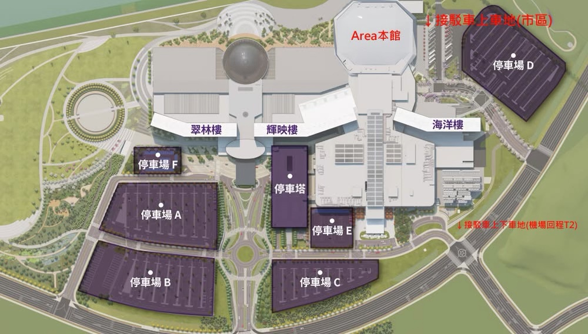
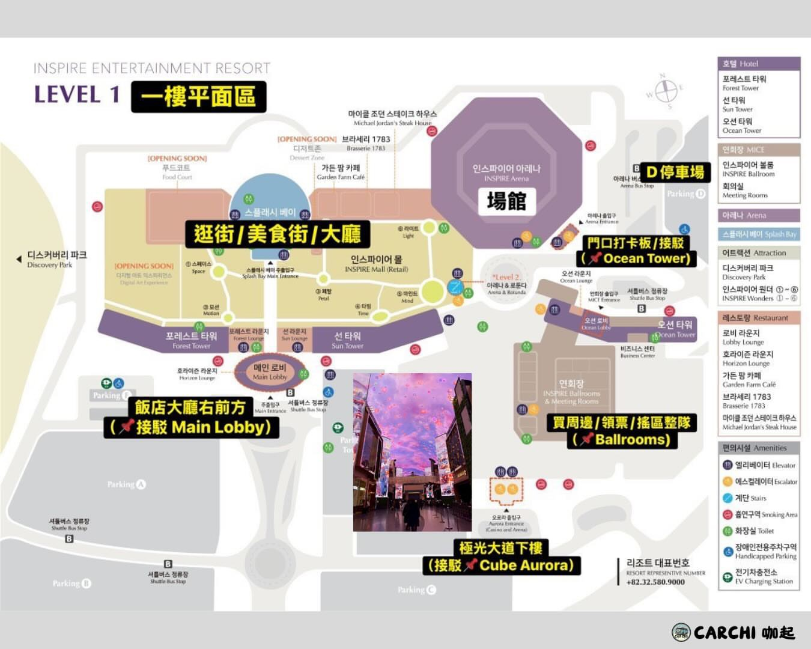
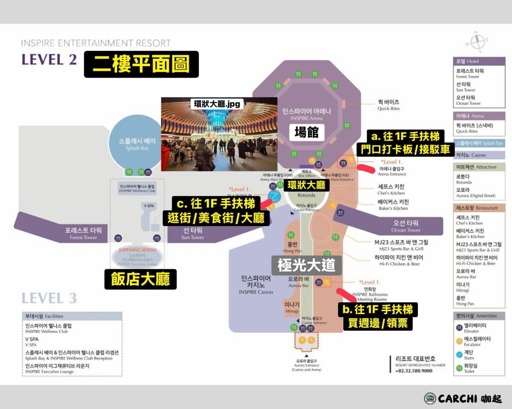

韓國旅遊簡報 ③ ・ 11/21（六）– 11/22（日）
MONSTA X 演唱會週末
交通與行李攻略
Inspire Arena（永宗島）・仁川機場豪生飯店 ↔ 會場往返・11/22 散場後回明洞
同行者兩場都進場
Hank 不進場
門票已買好
2026/10/14 整理 ・ 時間、票價與車班以現場及官方公告為準
演唱會 ・ 2026 MONSTA X WORLD TOUR [THE X : NEXUS] – ENCORE
兩場時間與入場重點
11/21（六）18:00 開演
演出約 120 分鐘 → 預估 20:00–20:30 散場
11/22（日）16:00 開演
演出約 120 分鐘 → 預估 18:00–18:30 散場
會場
Inspire Arena（約 1.5 萬席）
인스파이어 아레나
인천 영종구 공항문화로 127
售票頁仍寫舊區名「중구」，同一地址
進場
- 入口搭手扶梯到 2F：售票處與座位入口，分 EAST／WEST
- 館內除了瓶裝水，食物飲料不能帶進去
- VIP ₩198,000／一般 ₩154,000；7 歲以上可入場
來源：NOL 售票頁、iMBC（2026/9）、るるぶ（2026/6）、CBS 노컷뉴스 ・ 散場時間為推估，以現場為準
住宿 ・ 依 Trip.com 訂房確認信
這兩晚住哪、下一站住哪
11/20 – 11/22 ・ 2 晚
仁川機場豪生飯店
하워드 존슨 호텔 인천 에어포트
인천 영종구 신도시남로142번길 6
- AREX 운서역（雲西站）步行約 5 分鐘
- 入住 15:00 後；11/22 退房 11:00 前
- 含 2 人早餐（週末 06:30–10:00）
- 押金 ₩100,000；已備註「需寄放行李」
- 電話 +82-32-722-0000
11/22 – 11/24 ・ 2 晚
明洞東方飯店
오리엔스호텔앤레지던스
서울 중구 삼일대로2길 50
- 最近地鐵：忠武路站（3・4 號線），南山谷韓屋村旁
- 入住 15:00 後；退房 11/24 12:00 前
- 押金 ₩200,000（信用卡）
- 電話 +82-2-2280-8000
更正：先前行程草稿寫的 Hyatt Place、Oakwood 在信箱裡找不到訂單；實際訂的是上面兩間。
來源：Trip.com 訂房確認信（9/15、9/29）、韓國觀光公社、HotelsCombined
永宗島示意圖
飯店、機場、會場三個點
← 往首爾 ・ AREX 機場鐵路
운서 雲西站
공항화물청사
貨物廳舍站
인천공항1터미널
第 1 航廈站
第 2 航廈站
豪生飯店
Inspire Arena
免費接駁車（黃線）
T1 2C／14C 上車，Ocean Tower 下車
計程車（虛線）約 15–20 分鐘
自繪示意圖，非實際比例與方位 ・ 另有 204 公車：운서역 → T2 → 인스파이어리조트 直達，但約 1 小時一班
接駁車 ・ 官網核對（2026/10/14）＋網友經驗
常態接駁是官方的，演唱會接駁看公告

網友標註：右上＝往市區上車；右下＝往 T2 上下車
官網：常態免費接駁（40 人，坐滿不載）
- T2 線：每小時一班，Main Lobby :30／Ocean Tower :35 → T2 8A :50；7:30–22:50
- T1 線：平日每小時、週末每 30 分，T1 2C、14C 上車；8:00–22:20
- 演唱會時段 Ocean Tower 可能不停（官網會列日期）
演唱會專用（官網未列；2025–26 多場經驗一致）
去程：貨物廳舍站 2 號出口，開演前 5 小時起、約 20 分一班。散場：只開往首爾或 T2，結束後約 1.5 小時內，車程 10–15 分，可能等 30 分以上。
來源：inspireresorts.com 오시는 길（2026/10/14 讀取）、Threads 網友分享 ・ 演唱會專用接駁以 MONSTA X 場次公告為準
館內動線 ・ 網友整理的平面圖
迷路就回 2 樓環狀大廳


- 2F 環狀大廳（Rotunda）連到場館、極光大道、商場
- 領票、周邊、整隊多在 1F Ballrooms：從極光大道搭手扶梯下樓
- 看台分 EAST／WEST 門入場
- 館內全部相通，Google 導航會叫你繞外圍；網友建議用 Kakao Map
- 寄物：有些主辦在驗票口旁設行李區；館內另有少量付費置物櫃
平面圖來源：CARCHI 咖起（Threads 分享）・ 領票與寄物位置每場不同，以主辦公告為準
11/21（六）・ 18:00 場
豪生飯店 ↔ 會場：三種走法
| 方式 | 怎麼走 | 時間／費用 | 注意 |
|---|---|---|---|
| A 計程車（最快） | 飯店門口叫 Kakao T，目的地輸入 인스파이어 오션 타워 | 約 15–20 分；約 ₩10,000–15,000（估算） | 早點出發避開人潮 |
| B 204 公車（直達） | 운서역 站牌上車 → 經 T2 → 인스파이어리조트 下車 | 約 30 分（推估，14 站）；可刷 T-money／WOWPASS | 約 60–75 分才一班，一天 14 班；先查到站時間 |
| C AREX＋演唱會接駁 | 雲西坐 AREX 1 站到 공항화물청사역 → 2 號出口搭演唱會日免費接駁 | 約 30–40 分；接駁免費 | 開演前約 5 小時起、15–20 分一班；以當天公告為準 |
散場後（約 20:00–20:30）
預定：搭散場專用的免費接駁到 T2（坐滿就發車，網友經驗約等 30 分）→ AREX 坐 3 站回 운서（約 15 分）。上車點在海洋樓東南側路邊（見接駁頁）。204 班距長只當備案。
來源：namu.wiki（204 路線、셔틀버스）、bustrain.kr、sunflowerset、영종도 여행 部落格 ・ 公車時刻以 Kakao Map／NAVER Map 即時到站為準
11/22（日）・ 16:00 場 ・ 退房日
建議：Hank 先把行李帶回首爾
11:00 要退房、晚上要住明洞。Hank 不進場，白天先把兩人的行李送到東方飯店，同行者就能輕裝看完直接回首爾，不用再繞回雲西拿行李。
Hank
- 11:00 前退房，步行到雲西站
- AREX 一般列車 → 서울역（約 50 分）
- 轉 4 號線坐 3 站 → 충무로（忠武路）
- 約 12:30–13:00 到飯店先寄放行李
- 15:00 後辦入住
同行者
- 早餐後退房，只帶隨身小包
- 計程車到 Inspire（約 15–20 分）
- 在館內排周邊、吃午餐等開場
- 16:00 開演，約 18:00–18:30 散場
- 直接回首爾（下一頁路線）
備案（兩人一起行動）：退房後 AREX 到 T2，行李寄 3F 西側 1 號門附近的韓進（24 小時）→ 接駁到會場 → 散場回 T2 取行李，B1 29 號搭 6001
11/22（日）散場後 ・ Inspire → T2 → 明洞東方飯店
先搭免費接駁到 T2，再二選一
| T2 之後 | 怎麼走 | 時間／費用 |
|---|---|---|
| ① 6001 機場巴士 | T2 地下 1 樓 29 號月台上車 → G3호텔(한옥마을) 或 호텔피제이(충무로역) 下車，走幾分鐘到飯店 | ₩17,000；約 10–20 分一班，T2 末班 22:49；不用轉車 |
| ② AREX 一般列車 | T2 起站有座位 → 서울역 → 4 號線坐 3 站到 충무로 | 首爾站約 66 分＋地鐵約 5 分；票價約 ₩5,000 上下 |
接駁車要注意
散場有專用免費車到 T2，坐滿就發，網友經驗約等 30 分。T2 是 AREX 起站、6001 也在 B1，兩條都從這裡出發。
怎麼選
累了想直接坐到門口 → 6001。省錢、怕塞車 → AREX。行李若已由 Hank 先送到，兩個都很輕鬆。
來源：namu.wiki 셔틀버스（T2 時刻為 2024/10 版）、pleasedontbe 6001 整理（2026）、AREX 票價資料 ・ 下車站名以車上廣播為準
出發前清單
還沒公布、要再確認的事
① 取票方式
10/26 後付款的票只能現場取票；全球頁的取票地點與證件（護照）規定在公告圖片裡，同行者要確認。
② 演唱會日接駁
確認貨物廳舍站 2 號出口的接駁有開、散場後幾點收班。雲西飯店樓下有車直達會場的說法查不到來源，請問豪生櫃台。
③ 叫車 App 先設定
在台灣就裝好 Kakao T 或 Uber、綁好信用卡；散場時才設定會叫不到車。
④ 跟飯店確認
豪生：退房後能否寄放行李到晚上（若改成散場再拿）；東方：13:00 前能否先寄放。
Inspire 接駁時刻表：inspireresorts.com › Getting Here ・ AREX 末班車與票價：arex.or.kr